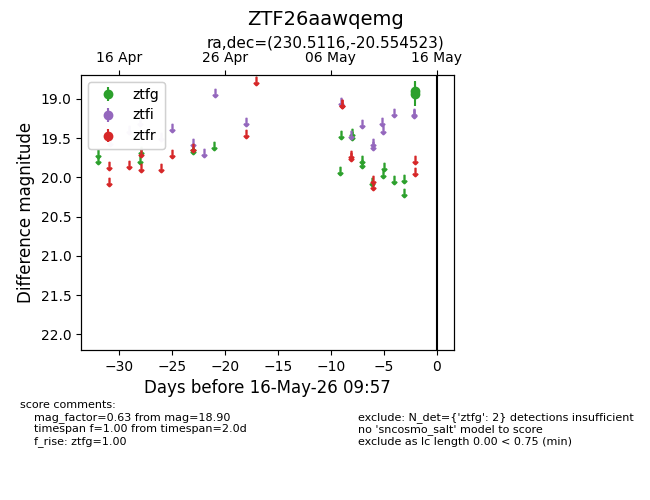
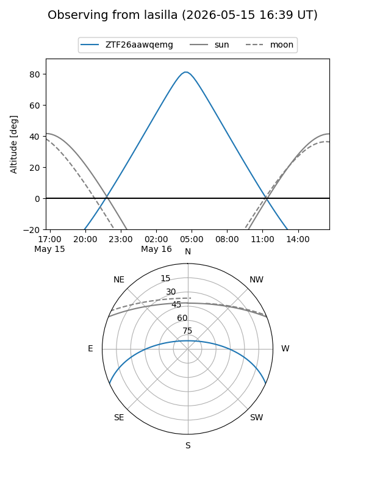
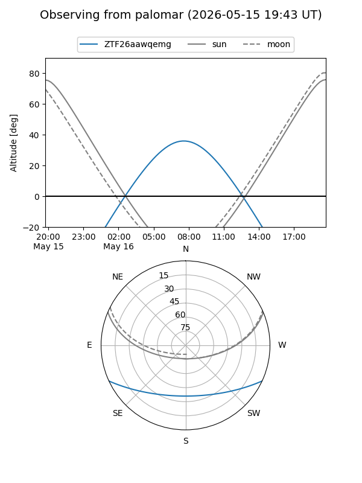

ZTF26aawqemg
Target ZTF26aawqemg at 2026-05-16 09:59
Aliases and brokers:
FINK: link
Lasair: link
ALeRCE: link
alt names
ZTF26aawqemg (ztf,fink_ztf)
Coordinates:
equatorial (ra, dec) = 230.5116,-20.55452
equatorial (HMS+DMS) = 15:22:02.78,-20:33:16.28
galactic (l, b) = (344.2563,+29.97889)
Flags:
Photometry:
last ztfg=18.90
2 ztfg detections
Lightcurve

Visibility


Additional plots